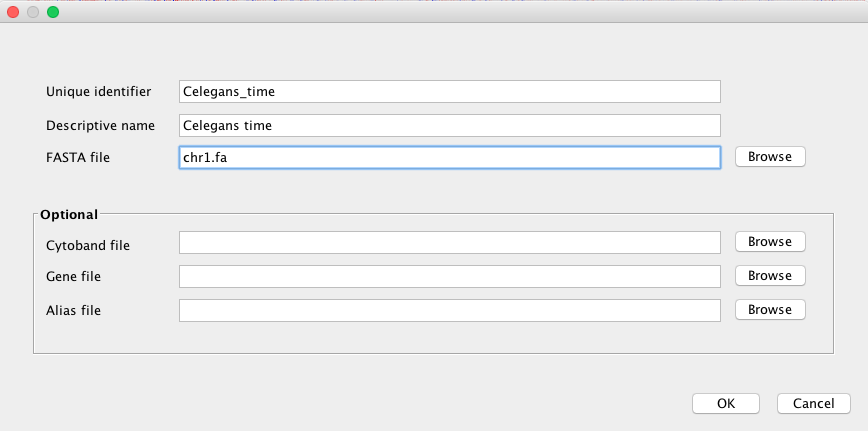

Quick start¶
If you have to start using Pergola in some easy steps follow this guide.
Note
This quick start guide assumes Pergola has been previously installed, if this is not the case follow instructions in Installation section.
Get your data¶
A data set containing motion behavior from C.elegans data set is available on Zenodo. Two download all the files inside a folder name data you can follow these commands:
mkdir data
wget -O- https://zenodo.org/record/582343/files/celegans_unc16_N2.tar.gz | tar xz -C data
Note
Explain in what consist the data set
Declare equivalence¶
Pergola needs you to set the mappings between the information represented in your behavioral file in order to understand each piece of information inside your file, see Mapping file and Pergola ontology for a deeper description. You can download the mapping file for this example here.
wget -O- https://gist.githubusercontent.com/JoseEspinosa/b49900521c53123108c82832da8d063c/raw/a9f05ec8f67dc19b665f788bc7b986876d1b6320/worm_speed2pergola.txt > ./data/worm_speed2pergola.txt
Pull Pergola image¶
You can obtain last Pergola version from Pergola Docker Hub repository.
docker pull pergola/pergola:latest
First we will launch Pergola image mounting the files we need into the container by typing:
docker run --rm -it -v /data:/container_data -w /container_data pergola/pergola bash
Note
If you want to install Pergola on your system instead, refer to Installation documentation section.
Run Pergola¶
You can know process the downloaded with Pergola using the following command:
pergola -i ./data/*.csv -m ./data/worm_speed2pergola.txt -f bedGraph -w 1 -min 0 -max 29000
The resultings files can be uploaded on a desktop browser for its visualization as explained below.
Visualize data¶
We choose the Integrative Genomics Viewer for visualizing the data. IGV can be downloaded from here.
After launching IGV, first you have to create a genome file. Go to Genomes menu and click on “Create .genome File…” Data can be visualize using a heatmap.

On the menu that pops up load the fasta file generated by Pergola and click on OK.
Now you can render all BedGraph files generated before by going to File menu and click on “Load from File…”

Note
Stack the tracks corresponding to each group, in this manner differences will become easier to identify
Finally to obtain a heatmap of the tracks it is necessary to set some options:
- To visualize all the tracks in the screen go to Tracks and click on “Fit Data to Window”
- Now select all tracks by clicking on their names and right click with the mouse, as a result a menu will pop up. On this menu check “Heatmap” under Type of Graph menu and “None” under Windowing Function.

- To display the differences between the tracks, adjust heatmap settings as shown in the snapshot below.
- The resulting rendering shows how overall the speeds of UNC-16 (uncoordinated strain), tracks below, are lower depicting a deficient moving behavior when compared to control (N2) strain on top.